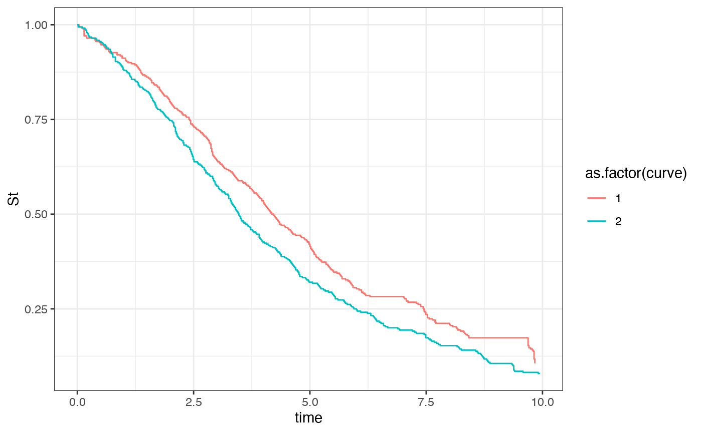

Example-digitization
Jasper Zhang
2023-06-17
Example-digitization.RmdImage to be digitized

out1 <-SurvdigitizeR::survival_digitize(img_path = here::here("vignettes","KMcurve.png"),num_curves = 2,censoring = F,
x_start = 0,x_end = 10,x_increment = 1,y_start = 0,y_increment = 0.25,y_end = 1,y_text_vertical = T)
out1 %>%
ggplot(aes(x = time, y= St, color = as.factor(curve), group = curve)) +
geom_step() + theme_bw() 